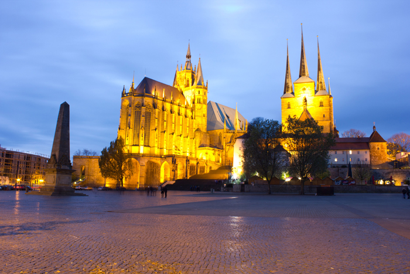

ISO 100 18 mm f/11 25 s
Domplatz | Erfurt, Deutschland
Lange hatte ich vor den Domplatz von Erfurt in den Abendstunden fotografieren, im November 2017 hat es nun endlich geklappt. Links seht Ihr den Erfurter Dom, rechts die Severikirche. Das historische Stadtzentrum der Landeshaupt Thüringens ist auf jeden Fall eine Reise wert. Besonders sehenswert ist die Krämerbrücke - die längste durchgehend mit Häusern bebaute Brücke in Europa, auf denen sich viele Kunsthandwerksläden finden.
#ERFURT #DOM #ARCHITECTURE #THÜRINGEN #GERMANY

ISO 100 18 mm f/11 15 s
Pfortmühle | Hameln, Deutschland
Die Pfortmühle (eine ehemalige Wassermühle) 1893-1895 gebaut und gilt als herausragendes Industriedenkmal. Das Gebäude befindet es sich in unmittelbarer Nähe der Altstadt und wurde 1992 restauriert. Heute findet sich hier die Stadtbibliothek und ein Restaurant. Das Foto habe ich vom Werder gemacht, von wo man einen tollen Blick auf die Weser und die beleuchtete Pfortmühle hat.
#HAMELN #BIBLIOTHEK #ARCHITECTURE #NIEDERSACHSEN #GERMANY

ISO 100 18 mm f/8 15 s
Opernhaus | Hannover, Deutschland
Wer durch die Innenstadt von Hannover geht, der wird unweigerlich das wunderschöne Opernhaus von Hannover antreffen, das direkt am Kröpcke liegt. Gerade abends zeigt sich hier eine tolle Stimmung, mit den vielen Leuten, die den Abend genießen, den kleinen Cafés auf der anderen Straßenseite und den kulturellen Veranstaltungen der Oper.
#HANNOVER #OPERNHAUS #ARCHITECTURE #NIEDERSACHSEN #GERMANY